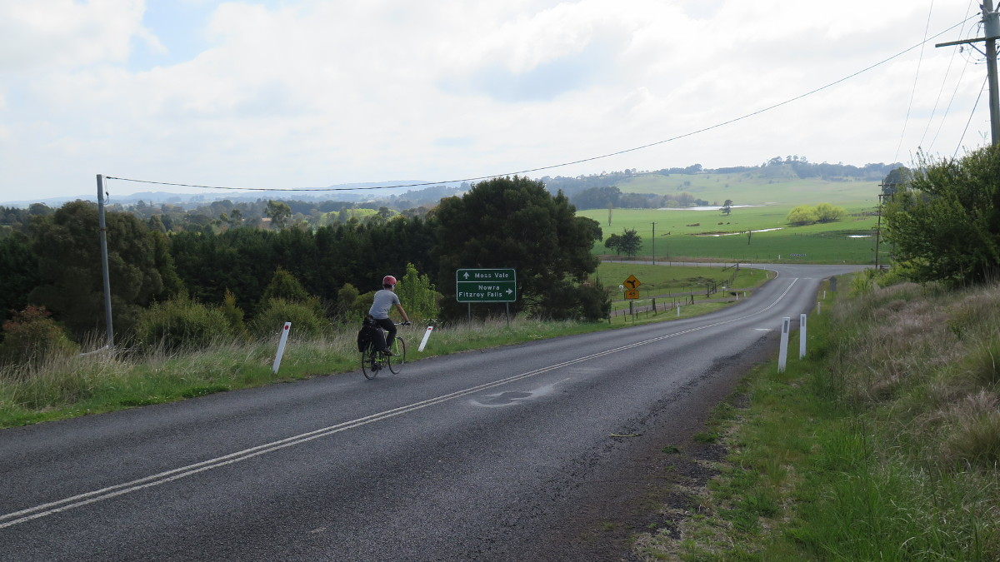

2015 recap
It's Christmas today. And the end of 2015 is only 6 days away. Looking back, life has been good this year. It was a year where I was figuring out things in my life such as - Who am I? What makes me happy? What is important to me?
I had a little bit of a quarter-century age crisis and I tried to invested this anxiety and energy into improving myself through various ways. One of which was blogging and making a thorough life planner.
I have been keeping a list of things of highlights throughout the year.
Highlights
- Deactivated Facebook
- Job Promotion
- Started October sailing (this blog)
- Started cycling
- Cycled from Canberra to Sydney
- Launched my business officially
- Travelled to the US for a month
- Completed Improv Level 1 classes
- Stopped Masters of Architecture. Will pursue Masters of Project Management
- Met many wonderful people from the internet and in real life - JZ, CL, TT, JC, MN,
- Went on a 3 day cruise to nowhere
- Slowly growing self-esteem and confidence
- Read around 20 books. Going to aim for 40 books next year.
- Tried to reach out more to people through email - (2 architects, 1 academic)
- Decluttered my room using the Konmari method
- Started using Trello as my life planner
- Bought Google Pixel-C tablet (now I'm broke again)
And these are my goals for 2016.
2016 Goals
- Move out with a friend
- Make $7000 from Dear Andrew Kim
- Make 10 new good friends
- Read the whole Bible (I think I can only judge the religion once I have read it through it all once)
- Start Masters of Project Management and kill it
- Meet up with my New York friend, somewhere in the world
- Have 1 art exhibition
- Read 40 books
- Read all of The School of Life books
- Finish 3 coursera courses
- Start up a meet up group
- Make journalling a habit
- Completely stop watching porn
- Learn tennis and be great at it
- Get a job promotion
- Learn pottery
2016, bring it on.